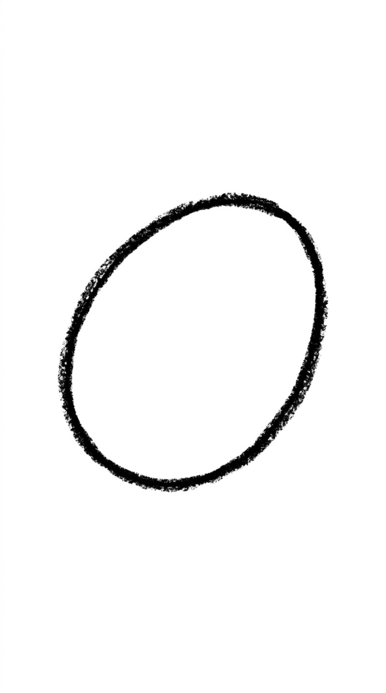
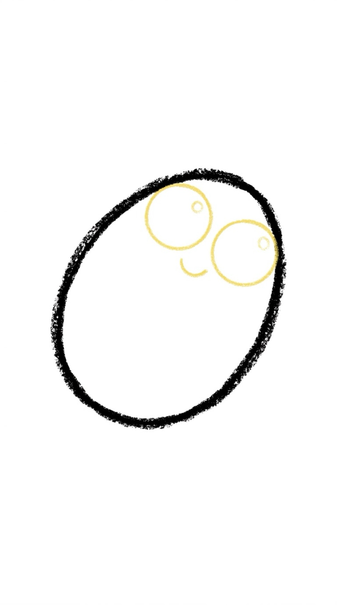
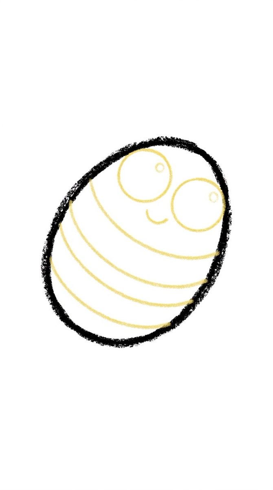
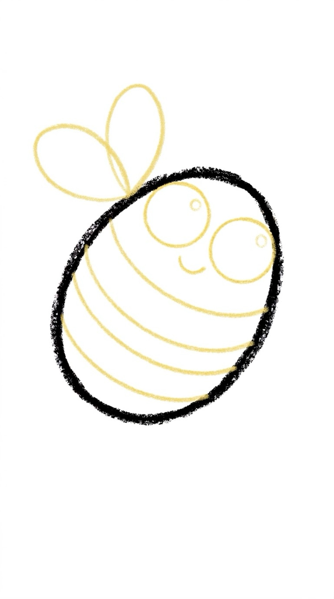
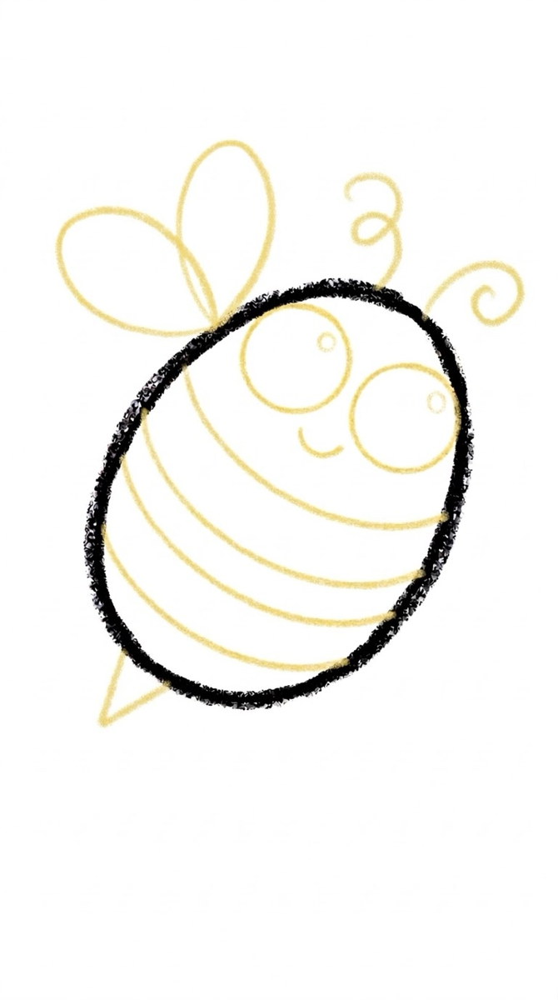
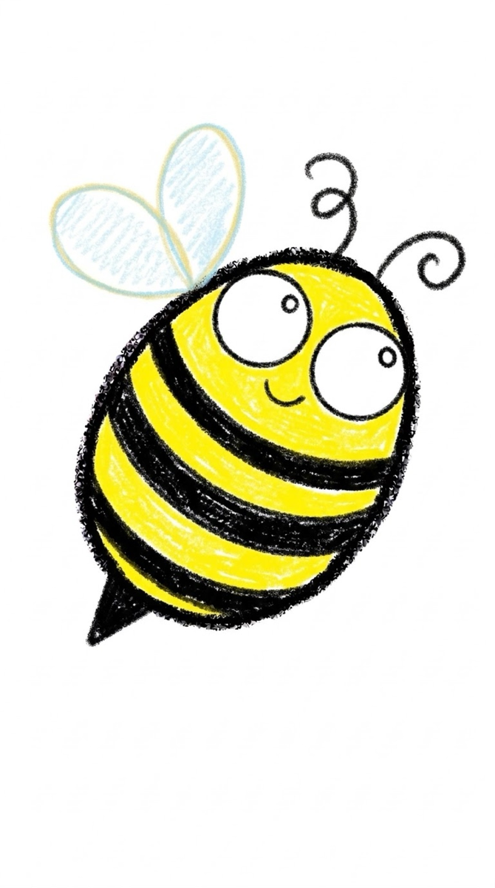

How to Draw a Bee 6 Easy Steps for Kids
Quick Answer
This free step-by-step tutorial shows kids how to draw a bee in six easy steps: a round body, stripes, see-through wings, a tiny stinger, a happy face, and antennae. Download the printable PDF, grab crayons, and follow along together. Made for ages 4 and up — no signup needed, just print and draw.
At a Glance
- Subject: How to draw a bee
- Ages: 4+
- Steps: 6 steps
- Time: ~10 min
- Difficulty: Easy
- Supplies: Paper, crayons
Bees are the perfect first insect — round, stripy, and cheerful. The stripes are just lines across an oval, and the wings are the easiest 'transparent' effect in kid art: draw them, then barely color them in.
✏️ How to Draw a Bee: Step by Step
One step per box — draw each new part in a different color so kids can see exactly what changed.
Step 1: Step 1: The Round Body

Draw a plump oval tilted slightly — like a lemon lying on its side. This is the bee's body.
Step 2: Step 2: The Happy Face

Draw 3 curved stripes across the body behind the face — arcs following the oval's curve.
Step 3: Step 3: The Stripes

Draw two leaf-shaped wings on top of the body, slightly overlapping, behind the head end.
Step 4: Step 4: See-Through Wings

Draw a small triangle stinger at the back end and two curly antennae on top of the head.
Step 5: Step 5: Stinger and Antennae

Add two big eyes and a smile right on the front of the body — the face sits on the bee, not floating above it.
Step 6: Step 6: Color It In

Color it yellow and black with barely-blue wings!
📊 Bee Drawing by Age
Every age can join in — just adjust the job.
| Age | What they can do | Tip |
|---|---|---|
| 3–4 | Trace the oval and draw the stripes | Stripes are just arcs — great curve practice |
| 4–5 | Draw the body, stripes, and wings with help | Color the wings very lightly — 'see-through' is the lesson |
| 6+ | Draw the whole bee solo | Challenge: draw a bee mid-flight with dotted loop-the-loops |
🖨️ Download Your Free Bee Drawing Printable
The printable lays out all 6 steps one per box, big enough for little hands — kids draw right alongside each step.
⬇️ Open Free Printable 🖨️ Print🎁 Free printable for ages 3+
🐝 Flower-to-Flower Flight Path
Draw three simple flowers across the page and connect them with a dotted looping line — your bee's flight path. Place the bee on one flower. The dotted path teaches that drawings can show movement, not just things, and kids love tracing the route with their finger.
What You'll Need to Draw a Bee
Yellow for the body, black for the stripes — the stripe pattern is the whole identity of a bee. Light blue for the wings (they should look see-through, so color lightly). The stripes need to be even, which is good measurement-by-eye practice. White paper keeps the yellow bright.
What They're Learning
Bees are stripes — even, parallel curved lines wrapping around an oval body. That's genuinely tricky spacing work and very satisfying when it looks right. The wings (two overlapping ovals) introduce transparency: kids learn that overlapping shapes can share space. The tiny stinger and antennae are precision details for fine motor practice.
Make It Yours
Draw it hovering over a flower with a dotted flight path looping behind it. A whole hive with multiple bees, honeycomb hexagons in the background, or a bee carrying a pollen basket. For a fun twist, try a bumblebee (rounder, fuzzier with zigzag edges) vs a honeybee (slimmer, smoother). A bee costume on a kid's self-portrait is always funny.
❓ Bee Drawing FAQs
What is the easiest way for a kid to draw a bee?
Draw a plump tilted oval and add three curved stripes across it. Top it with two leaf-shaped wings, add a tiny triangle stinger at the back, a happy face at the front, and two curly antennae. Color it yellow and black — the stripes do all the bee-ness.
What age can kids start learning to draw a bee?
Most kids can draw the oval and stripes around age 4 with help, and the full bee solo by 5 or 6. The curved stripes are excellent arc practice for little wrists.
What supplies do we need to draw a bee?
Paper and crayons or markers — yellow, black, and a light blue for the see-through wings. The free printable PDF lays out all six steps one per box so kids can draw right alongside each step.
Is the bee drawing printable really free?
Yes — every printable on MomYouNeedThis is 100% free to download and print. No signup, no payment, just tap the download button.
How do I print the bee drawing tutorial?
Open the PDF and print at 100% scale (not 'fit to page') so the drawing boxes stay big enough for little hands. The printable is designed to stay large — never shrunk to force a fit.
📚 Keep Exploring
More free drawing tutorials and coloring pages made for little hands and busy parents.
✏️ All 22 Drawing Tutorials